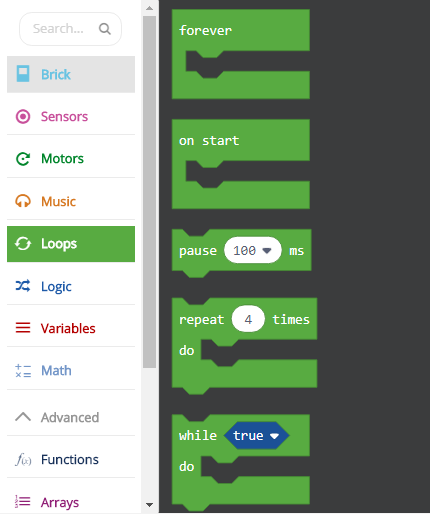
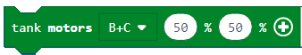
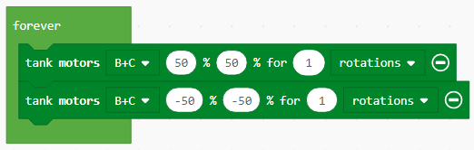
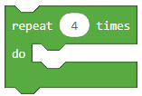
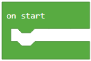
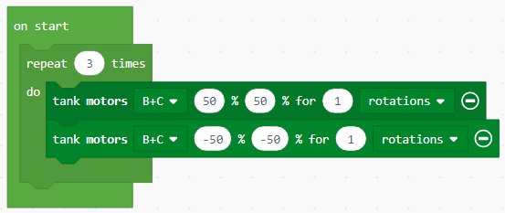
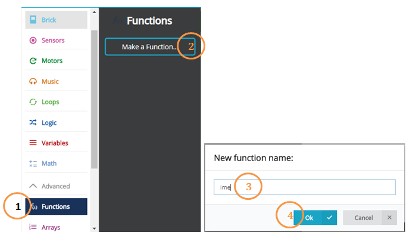
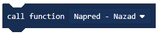
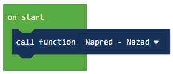

Задача-Напред-назад¶
В по-сложните приложения е нужно да изпълним едно действие няколко пъти, докато определени изисквания за неговото прекратяване не се осъществят.
Loops осигуряват възможността за повторение на същата кодова последователност, докато не се сбъдне прекратяващото ги условие.
Задействането на Loop-а може да се управлява по няколко начина:
Unlimited (без ограничения),
Sensor (действа до реакция на програмата към сензорите),
Time (може да бъде ограничено времево),
Count (определен брой повторения може да бъде избран предварително) and
Logic (може да използва логическа операция за осъществено условие).
Първо, ще обясним loops чрез прост пример за робот, движещ се вечно напред-назад.
Ще разделим тази задача на две части-първата ще се състои от два блока, които ще задвижат робота напред и назад.
Завлечете блока  на работния плот, натиснете знака + и изберете опцията “rotations” и настройте стойността и на 1.
За да се движи роботът напред, стойността (представляваща мощността) трябва да е положителна-ние ще въведем числото 50.
Във втория блок ще настроим мощността на мотора на -50, за да може роботът да се движи назад. За да позволим продължителното движение (без пауза), ще сложим блока отгоре в безкраен loop, добавяйки блока  , който ще разреши на робота да се движи напред и назад продължително (безброй пъти), докато програмата не бъде спряна., който ще разреши на робота да се движи напред и назад продължително (безброй пъти), докато програмата не бъде спряна.
, който ще разреши на робота да се движи напред и назад продължително (безброй пъти), докато програмата не бъде спряна., който ще разреши на робота да се движи напред и назад продължително (безброй пъти), докато програмата не бъде спряна.
Тя изглежда така:
Свържете EV3 Brick-а с компютъра си чрез USB кабел и свалете .uf2 файла на своя компютър, натискайки бутона  . Завлечете файла на EV3 и той ще бъде готов за работа.
. Завлечете файла на EV3 и той ще бъде готов за работа.
Можем също да ограничим движението на робота, например, ако искаме той да се движи напред и назад конкретно три пъти.
За да го направим ще използваме loop, в който блокът ще се повтори определен броъ пъти. Роботът ще се премести напред и назад 3 пъти.
За да спрем повторението на кодовата последователност, ще използваме блока , където ще определим именно броят на действието, което ще повтаря роботът, в блока . В нашия случай стойността е 3.
Програмата изглежда ето така:
Свържете EV3 Brick-а с компютъра си чрез USB кабел и свалете .uf2 файла на своя компютър, натискайки бутона . Завлечете файла на EV3 и той ще бъде готов за работа.
Третият начин за повторение на конкретно действие е чрез блок, който ще извършва дадено ействие до осъществяването на конкретно условие. Този блок би ни послужил, когато не знаемколко пъти трябва да повторим някаква част от кода.
За да демонстрираме условно повторение, ще създадем програма, която ще позволи на робота да се движи около кутия с формата на квадрат, докато не срещне препятствие (не докосне кутията).
Този код е:

Свържете EV3 Brick-а с компютъра си чрез USB кабел и свалете .uf2 файла на своя компютър, натискайки бутона . Завлечете файла на EV3 и той ще бъде готов за работа.
Тази задача може да се изпълни чрез functions.
Някои по-сложни проблеми могат да се разрешат по-лесно, ако са разделени на по-малки съставни части, които са и решими самостоятелно. На други езици за програмиране тези единици се наричат субпрограми-функции и процедури. Знаем, че можем да улесним кода чрез команди за повторение, но често само това не е достатъчно.
Когато искаме роботът да повтаря някакво действие, част от програма, или в друга програма, можем да използваме процедури, по-точно, блока .
След като използвахме движението напред и назад на робота в нашите предходни примери, ще използваме тези два блока, за да създадем наша собствена функция напред и назад. Как става това?
Първата стъпка е да създадем функцията с дейностите, които трябва да бъдат повторени-движението напред и назад.
Ще отворим категорията Function (1), натискайки бутона Make a Function (2) и въвеждайки името на функцията, която искаме да създадем (3). Ще завършим функцията, щом натиснем бутона OK (4).
Добавете двата блока за движение, първият, отговорен за движението един оборот напред, и вторият, разрешаващ един оборот назад.
Функцията напред-назад:

За да използваме функция в програма, трябва да я „повикаме“ чрез блока .
Така кодът придобива следния вид:
Свържете EV3 Brick-а с компютъра си чрез USB кабел и свалете .uf2 файла на своя компютър, натискайки бутона . Завлечете файла на EV3 и той ще бъде готов за работа.